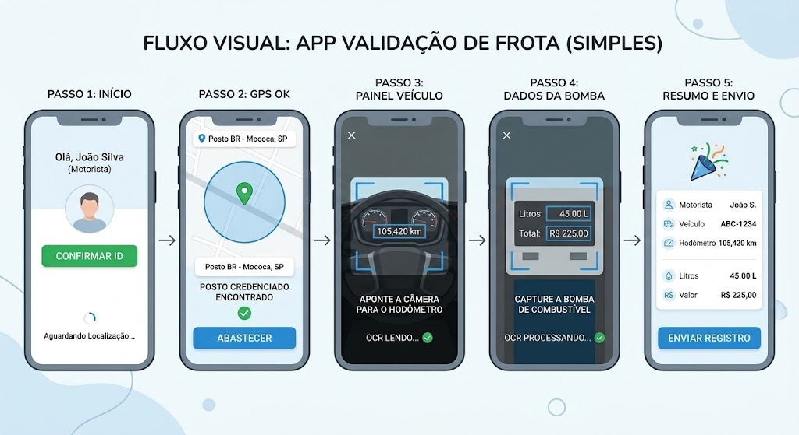

O FrotaSafe é uma solução mobile desenvolvida para eliminar fraudes em abastecimentos corporativos. O sistema combina Geolocalização (GPS) e Visão Computacional (Câmera) para garantir que o veículo correto esteja no posto autorizado com o motorista designado.
Confirms a identidade do motorista via selfie no início da operação.
Valida se o dispositivo está fisicamente no posto credenciado.
Lê automaticamente o hodômetro e dados da bomba sem digitação manual.
Esquema visual da jornada do motorista em 5 passos:

Captura a foto do rosto do motorista e valida os dados do veículo.
Verifica se o veículo está dentro do perímetro do posto cadastrado.
Fotografa o hodômetro para registrar a quilometragem via OCR.
Captura litros, preço e valor total diretamente da bomba.
Cruza as informações e envia os dados validados para o sistema central.